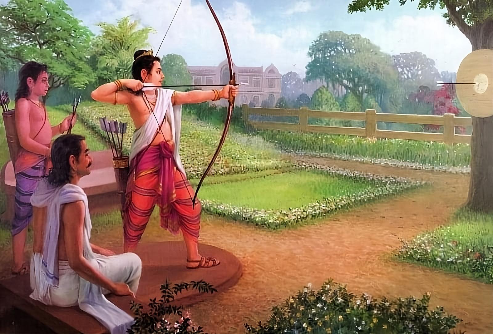
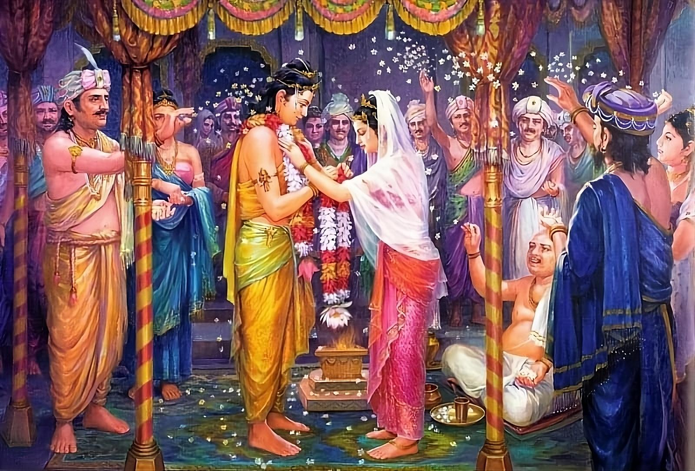

Namo tassa bhagavato arahato sammāsambuddhassa
Homage to the Most Venerable One, the Arhat, the Self-Awakened One
Namo tassa bhagavato arahato sammāsambuddhassa
Homage to the Most Venerable One, the Arhat, the Self-Awakened One
Namo tassa bhagavato arahato sammāsambuddhassa
Homage to the Most Venerable One, the Arhat, the Self-Awakened One
Sabbapāpassa akaraṇaṃ,
Do no evil
Kusalassa upasampadā ;
Accumulate good things
Sacitta pariyo dapanaṃ,
Encourage your mind to comprehend
Etaṃ buddhāna sāsanaṃ
This is Buddha's teaching.
The picture shows Siddhartha practicing archery.
When Siddhartha was sixteen years old, Raja Suddhodana thought, "The time has come to build palaces for my son," and he invited the most famous and experienced architects, carpenters, masons, sculptors and artists to discuss the construction. After making the necessary preliminary preparations, such as laying the foundations at the chosen site at the auspicious time indicated by the astrologers, he gave orders for the construction of three palaces, named Ramma, Suramma and Subha. These palaces were specially designed to accommodate comfortable living in the three seasons. They were of equal length, width and height, differing only in the number of spires.
These three palaces are not described in detail in the commentaries in the Buddhavamsa and the Jataka. They are described in detail in the commentaries to the Sukkhu-mala Sutta (AN 3.39), the Magandiya Sutta (MN 75), and in the supplementary commentary to the chapter on the Flourishing of Family Life (Āgārika-sampatti) in the Ornaments of the Conqueror (Jinālaṅkāra).
This is how this period of Siddhartha's life is described in the Sukhumala Sutta (AN 3.39):
"Monks, I was raised to be refined, extremely refined, incredibly refined. In my father's residence, lotus ponds were made just for my pleasure: one with red lotuses blooming, one with white lotuses blooming, and one with blue lotuses blooming.
I used no other sandalwood than that brought from Kasi. My turban, like my tunic, my undergarments, my upper garments were made of Kasi cloth. Day and night a white canopy was kept over me to protect me from the sun, heat and cold, dust, grass and dew.
I had three palaces: one for the winter season, one for the summer, one for the rainy season. I spent four months in the rainy season palace, where I was entertained by musicians, and among them [there were only women and] not a single man. And I never left the palace. While the slaves, servants and workers in other houses were fed with broken rice and sour porridge, in my father's house they were given selected mountain rice, meat, milk-boiled rice."
The comments describe these palaces in more detail:
The Ramma Winter Palace had a nine-tiered spire. The structure and layout of the rooms were designed in such a way that the ceilings were kept somewhat low to conserve heat. Special attention was paid to the placement of special windows with ventilation and lion struts that could prevent cold air, snow, fog and wind from entering. Artists also painted images of blazing fire and flames on the walls, central pillars, roofs and other surfaces to dispel the saṅkhāra of cold at the sight of them.
The spire of the summer palace of Suramma had five tiers. The structure and arrangement of the rooms were designed to provide ventilation; the ceilings were high, the windows and shutters were spacious and wide. The main doors and windows were not very well protected; some doors were perforated, while others had nets of iron, gold and silver. The walls, central pillars, roofs and other surfaces were decorated with paintings of blue, red and white lotus to create a calming effect on the observers.
Mechanical devices such as fountains and showers were installed to cool and refresh the respective areas, simulating the rainy season when required. Under the roof, thin gold sheet coverings with very small holes were fixed. When water from four ponds on the four sides of the mansion was pumped to the ceilings by mechanical devices, it flowed down through the tiny holes, resembling raindrops.
Dried sheets of buffalo skin were stretched over the gold leaf ceilings, and mechanisms lifted pebbles onto the roof. The pebbles then fell on the buffalo skins, creating a sound reminiscent of thunder during the rainy season. When the prince lived in this palace and it was time to play in the water, pebbles were thrown onto the said sheets of buffalo skins to create sounds reminiscent of a thunderstorm. At this time, the prince, dressed in blue robes, enjoyed the water, enjoying its coolness during the day in the company of numerous servants, also dressed in luxurious robes and decorated with blue flowers.
The spire of the Subha Rainy Season Palace had seven tiers. The structure and the rooms were designed to be of medium size, not too low and not too high, not too wide and not too narrow. The main door and windows were designed to be suitable for both cold and hot seasons, some of them were lined with tightly woven boards, and some with holes and wire mesh.
After Raja Suddhodana had built three luxurious mansions for his son, such as no succession of Sakyan rulers had ever built before, he thought to himself, "My son has reached the age of sixteen. After I crown him with the raised white parasol, I will watch him enjoy the luxury and glory of royalty."
He then ordered the following messages to be sent to his thousands of Sakyana relatives: "Dear princes of Sakyana, my son has come of age and is now sixteen years old. The time has come for his marriage ceremony to take place. Each one should bring his daughters who have come of age to my palace."
When the noble families of the Sakyas received the royal message from Raja Suddhodana, they refused to comply with his request, replying in derogatory terms: "Siddhattha is uneducated, although he has a pleasant appearance. Without acquiring any skills, he will not be able to perform his duties in governing the family. Therefore, we cannot fulfill Raja Suddhodana's demands and give away our daughters."
These words are given in the commentaries to the Buddha-vamsa, the Anguttara-nikāya, and the Ornaments of the Conqueror (Jinalankara). However, the commentary to the Jātaka-nidāna mentions that the Sakyan relatives made disparaging remarks about Siddhattha at one of their meetings when the Bodhisatta was already living in luxury in three luxurious mansions among thousands of servants headed by his wife Yasodhara.
Having received the replies from the noble families of the Sakyas, the fathers of the daughters, Raja Suddhodana went to Siddhattha and related everything. Then Siddhattha replied, "My dear father, I have nothing to learn. What skill do you want me to demonstrate?" Raja Suddhodana replied, "My dear son, you should demonstrate to the noble families of our relatives the art of archery, which requires 1000 palas to string." Then Prince Siddhattha said, "Then, father, let the beating of drums proclaim throughout the city that on the seventh day from today I will give a demonstration of archery." Accordingly, Raja Suddhodana ordered this to be widely proclaimed throughout Kapilavatthu with the beating of drums.
After the proclamation had been made, arrangements were made to prepare a place for the prince to demonstrate his archery skills and to construct a decorated viewing platform for the ministers, ladies of the palace, retinue, attendants, soldiers and distinguished relatives of the Sakyans. On the seventh day, when all preparations were completed, the raja with his ministers, generals and guests took their places. Siddhattha took his place on the throne in the centre of the open area. In the silence that followed, he picked up the large bow presented to him by the royal attendants.
Sitting on the throne, he crossed his legs, holding the bow in his left hand, grabbed the bowstring with his big toe and began to pull it. When it was taut, he hit the bowstring with his right hand to adjust it. The vibrating sound coming from the bowstring was so loud that it echoed throughout the rostrum.
People outside the arena asked, "What is that sound?" and some replied, "It is the sound of thunder." Others said, "No, that sound was made when the Sakyan prince Siddhattha drew his bow, which requires 1,000 palas, and struck the string." Thousands of Sakyan relatives who witnessed the prince's impressive performance of tuning the bowstring were delighted.
The prince sent for the most renowned archery masters of Kapilavatthu, named Akhanavedhi, Valavedhi, Saravedhi and Saddavedhi, and assembled them in the palace precincts. As for himself, as in the previous existence when the Bodhisatta was born as the young Jotipala, as mentioned in the Story of the Birth of Master Sarabhanga ( Sarabhanga Jataka , J.522), he stood in the midst of the four kinds of audience with a majestic bearing, like a naga emerging from the earth, or Sakka, the Lord of the Devas, on a military parade.
He was dressed in a warrior's robe, had a diadem on his head, adorned with precious stones, and around his waist was a belt adorned with seven kinds of precious stones. He held a crescent-shaped bow made of animal horn, with a coral-colored string, and over his shoulder hung an emerald-colored quiver.
The four aforementioned master archers took up their positions at the four corners of the arena. They stood in position along with their personal attendants, who held quivers of arrows. Siddhattha, taking out a diamond-tipped arrow, called upon the four master archers to aim and shoot at him.
The master archers pleaded, "Our lord's son, we are the most experienced archers who can shoot and hit the target with the speed of a flash of lightning. You are young and tender, we do not have the courage to shoot at you."
But Siddhattha insistently said to them, "Do not be afraid! If you can shoot to hit, then do not hesitate to shoot at me," standing erect, fearless, in the center of the arena. The master archers then began to shoot arrows at Siddhattha with all their might. The prince stopped all the arrows by deflecting them, hitting them with diamond-tipped arrows and manipulating them so that they did not fall in disarray, but caused the arrows' fragments and tails to fall in one place, forming a heap. In this way, the four master archers used up all the arrows allotted to each of them. When the prince learned that all the arrows were spent, he skillfully threw down his quiver without dropping a single arrow.
The audience let out joyful cries of praise, beat their chests, and their thunderous applause echoed throughout Kapilavatthu.
Thereupon Raja Suddhodana asked his son, "My dear son, what do you call the skill in archery which you have just demonstrated?" "Respected father, what I have demonstrated is the art of defending oneself from the flying arrows of the enemy with one's own arrow ( sara-patibahana )."
Raja Suddhodana inquired, "Is there anyone other than my son who has mastered this art?" In reply the archers said, "Respected Raja, in all of Jambudipa there is no one who has mastered this art other than your son."
The prince then said, "These four master archers standing at the four corners were unable to hit me with their arrows. Now I will shoot one arrow and hit all four master archers." Hearing these words from the prince, the four master archers could not control themselves, shaking with great fear.
The prince then ordered four banana trees to be placed at the four corners where the four master archers had previously been stationed; tying a piece of red silk thread to the tail of an arrow with a special diamond-shaped tip, he aimed at the trunk of one banana tree and released the arrow. The arrow passed through the first trunk of the palm tree, but without stopping, it headed for the second trunk; continuing to pierce the third and fourth banana trunks, having covered a circular trajectory like a boomerang, the arrow finally stopped. The four banana trunks, pierced with a red silk thread, stood connected to each other by this thread. The spectators again loudly exclaimed and shouted in approval.
Raja Suddhodana again asked his son, “Dear son, what is the name of this wonderful archery skill that you have just demonstrated?” “Respected father, what I have just demonstrated is the archery skill of hitting all the intended targets in a circular path with a single arrow with a diamond-shaped tip. This is called ( cakka-vedhi ).”
Thus Siddhattha demonstrated the 12 minor archery skills one after another and also the 4 major archery skills such as:
In addition, Siddhattha also demonstrated the ability to shoot, piercing massive targets ( Satta-maha-kaya-padalana ).
Thus Siddhattha demonstrated his skill in archery to dispel the mistrust, contempt, slander and reproaches heaped upon him by his relatives. It was a skill that had no equal, it was a miracle that is rarely witnessed. Thereupon all the royal relatives, freed from the doubts and fears they had previously harbored, joyfully proclaimed, "Never before in our history of the Sakyan dynasty has anyone witnessed such skill as we have now witnessed," showering Siddhattha with praise. They were so delighted that they readily consented to the royal betrothal of their daughters.
More than a thousand daughters of purebred descent and incomparable beauty were sent to the royal court.
Among the thousands of daughters of the Sakyans was Yasodhara, whose maiden name was Bhaddakacchana. Yasodhara was born from the union of the Sakyan ruler Suppabuddhi, the son of Siddhattha's grandfather, and Amitta, the younger sister of Raja Suddhodana. As the commentaries explain, Yasodhara was unique among the people of that time. She enjoyed the results of the merits she had accumulated through the perfections she had developed and the merits she had made in her previous countless existences. She subsequently became an outstanding and worthy woman, endowed with incomparable beauty and intelligence.

Thousands of royal relatives, led by Raja Suddhodana, gathered in a grand assembly to celebrate the marriage of Siddhattha and Yasodhara, which included raising the royal white umbrella over their heads, sprinkling them with cool water (abhiseka), and formally enthroning them on a golden throne.
Of the thousands of daughters presented by the Sakyan relatives, some were assigned to Yasodhara to form her personal retinue. Other daughters were appointed as permanent attendants in the three palaces.